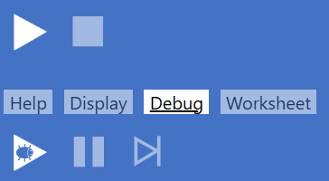

See also Punctuation symbols
A B C D E F G H I J K L M N O P Q R S T U V W X Y Z
| Term | Category | Links |
|---|---|---|
| A return to top | ||
| method | see abs in Maths functions | |
| keyword | see Abstract Class and Interface | |
| Abstract class | topic | see Abstract class |
| Abstract function | topic | see Abstract function |
| Abstract function method | topic | see Abstract Function Method |
| Abstract procedure | topic | see Abstract procedure |
| Abstract procedure method | topic | see Abstract Procedure Method |
| Abstract property | topic | see Abstract property |
| method | see acos in Maths functions | |
| method | see acosDeg in Maths functions | |
| method | see add in Set (data structure) | |
| method | see addFromList in Set (data structure) | |
| keyword | see and in Logical operators | |
| method | see append in List | |
| method | see appendList in List | |
| Argument | topic | see Argument |
| Arithmetic operator | topic | see Arithmetic operators |
| Type | see Array | |
| Type | see Array2D | |
| keyword | see as in Parameters | |
| method | see asBinary in Integer | |
| ASCII | topic | see Character sets |
| method | see asin in Maths functions | |
| method | see asinDeg in Maths functions | |
| method | see Common dot methods | |
| method | see asListImmutable in List immutable | |
| method | see asRegExp in String | |
| keyword | see Assert statement | |
| method | see Set (data structure) | |
| method | see Common dot methods | |
| method | see asSVG in Vector graphics | |
| method | see asUnicode in String | |
| method | see atan in Maths functions | |
| method | see atanDeg in Maths functions | |
| B return to top | ||
| keyword | see Let statement | |
| method | see bitAnd in Bitwise functions | |
| method | see bitNot in Bitwise functions | |
| method | see bitOr in Bitwise functions | |
| method | see bitShiftL in Bitwise functions | |
| method | see bitShiftR in Bitwise functions | |
| Bitwise functions | topic | see Bitwise functions |
| method | see bitXor in Bitwise functions | |
| constant | see Colours | |
| Block graphics | topic | see Block graphics |
| constant | see Colours | |
| Type | see Boolean | |
| Breakpoint | IDE | see Breakpoints |
| constant | see Colours | |
| Button +/- | IDE | see Outlining |
| Button Clear Display | IDE | see Display |
| Button Clear System info | IDE | see System info |
| Button Debug | IDE | see Run controls |
| Button Demo | IDE | see Demo |
| Button File | IDE | see File |
| Button Help | IDE | see Help |
| Button Pause | IDE | see Run controls |
| Button Redo | IDE | see Redo |
| Button Run | IDE | see Run controls |
| Button Step | IDE | see Run controls |
| Button Stop | IDE | see Run controls |
| Button Trim | IDE | see Trim |
| Button Undo | IDE | see Undo |
| C return to top | ||
| keyword | see Procedure call | |
| keyword | see Try statement | |
| method | see ceiling in Maths functions | |
| Character sets | topic | see Character sets |
| Type | see circleVG in Vector graphics | |
| keyword | see Class | |
| method | see clearPrintedText in Standalone procedures | |
| method | see clearKeyBuffer in Standalone procedures | |
| method | see clock in System methods | |
| method | see close in Input/output | |
| constant | see String constants | |
| Colours | topic | see Colours |
| Comment | topic | see Comments |
| Compilation | topic | see Status panel |
| Compile errors | topic | see Compile Errors and Warnings |
| keyword | see constant and Library constants | |
| Constants | topic | see Library constants |
| keyword | see Constructor | |
| Container instruction | IDE | see Code editor |
| method | see Common dot methods | |
| Context menu | IDE | see Context menu |
| keyword | see Copy with | |
| method | see cos in Maths functions | |
| method | see cosDeg in Maths functions | |
| method | see createFileForWriting in Input/output | |
| CSS | topic | see Displaying Html |
| D return to top | ||
| method | see degToRad in Maths functions | |
| method | see dequeue in Queue functions | |
| Type | see Dictionary | |
| Type | see DictionaryImmutable | |
| method | see difference in Set (data structure) | |
| Display | IDE | see Display |
| method | see Block graphics | |
| method | see Displaying Html | |
| method | see Vector graphics | |
| keyword | see div in Maths functions | |
| E return to top | ||
| keyword | see Each loop | |
| Editor | IDE | see Code editor |
| keyword | see If statement | |
| keyword | see Empty of Type | |
| keyword | Automatically supplied at end of program constructs | |
| method | see endOfFile in Input/output | |
| method | see enqueue in Queue functions | |
| keyword | see Enum | |
| Equality testing | topic | see Equality testing |
| keyword | see Throw and Try statements | |
| method | see exp in Maths functions | |
| Expression | topic | see Expressions |
| Extension function | topic | see Extension function |
| Extension procedure | topic | see Extension procedure |
| F return to top | ||
| constant | see Boolean constants | |
| Field | IDE | see Fields |
| File input/output | topic | see Input/output |
| method | see Vector graphics | |
| method | see filter in Higher order functions | |
| Type | see Floating point | |
| method | see floor in Maths functions | |
| keyword | see For loop | |
| keyword | see For loop | |
| Type | see Func | |
| keyword | see function | |
| Function call | topic | see Function call |
| Function method | topic | see Function method |
| Functional programming | topic | see Functional programming |
| G return to top | ||
| method | see Block graphics | |
| method | see Block graphics | |
| method | see Block graphics | |
| method | see System methods | |
| method | see System methods | |
| Global instructions | topic | see Global instructions |
| Global selector | IDE | see Global selector |
| Graphics | topic | see Block Graphics, Turtle graphics, Vector graphics |
| constant | see Colours | |
| constant | see Colours | |
| H return to top | ||
| method | see Dictionary immutable | |
| method | see Common dot methods | |
| method | see Turtle graphics | |
| Hexadecimal | topic | see Integers, Colours and Unicode |
| method | see Turtle graphics | |
| HoF | topic | see Higher order functions |
| HTML | topic | see Displaying Html |
| I return to top | ||
| IDE | IDE | see Integrated Development Environment |
| Identifier | topic | see Identifier |
| keyword | see If statement | |
| If expression | topic | see If expression |
| keyword | see Marking a test with ignore | |
| keyword | see Displaying images | |
| Type | see Vector graphics | |
| keyword | see Each loop | |
| Indexed value | topic | see Indexed Value |
| method | see Common dot methods | |
| Inheritance | topic | see Inheritance |
| keyword | see Inheritance | |
| Input, keyboard | topic | see Keyboard |
| Input, file | topic | see Input/output |
| method | see inputFloat in System methods | |
| method | see inputFloatBetween in System methods | |
| method | see inputInt in System methods | |
| method | see inputIntBetween in System methods | |
| method | see inputString in System methods | |
| method | see inputStringFromOptions in System methods | |
| method | see inputStringWithLimits in System methods | |
| method | see insert in List | |
| Instance | topic | see New instance |
| Instruction | IDE | see Instructions |
| Type | see Integer | |
| keyword | see Interface | |
| Interpolated string | topic | see Interpolated strings |
| method | see Set (data structure) | |
| keyword | see Equality testing | |
| method | see isAfter in String | |
| method | see isAfterOrSameAs in String | |
| method | see isBefore in String | |
| method | see isBeforeOrSameAs in String | |
| method | see isDisjointFrom in Set (data structure) | |
| method | see isInfinite in Maths functions | |
| method | see isNaN in Maths functions | |
| keyword | see Equality testing | |
| method | see isSubsetOf in Set (data structure) | |
| method | see isSupersetOf in Set (data structure) | |
| J return to top | ||
| method | see join in Set (data structure) | |
| K return to top | ||
| Keyboard | topic | see Keyboard |
| method | see keys in Dictionary | |
| L return to top | ||
| keyword | see Lambda | |
| method | see Common dot methods | |
| keyword | see Let statement | |
| Type | see Vector graphics | |
| Type | see ListImmutable | |
| Literal value | topic | see Literal value |
| method | see log10 in Maths functions | |
| method | see log2 in Maths functions | |
| method | see logE in Maths functions | |
| Logical operator | topic | see Logical operators |
| method | see lowerCase in String | |
| M return to top | ||
| keyword | see main | |
| method | see map in Higher order functions | |
| method | see matchesRegEx in String | |
| method | see maxBy in Higher order functions | |
| method | see maxFloat in List | |
| method | see maxInt in List | |
| method | see minFloat in List | |
| method | see minInt in List | |
| Member instructions | topic | see Member instructions |
| Member selector | IDE | see Member selector |
| Method | topic | see method |
| Method, dot | topic | see Method, dot |
| Method, standard | topic | see Method, standard |
| Method, system | topic | see Method, system |
| method | see min | |
| method | see minBy in Higher order functions | |
| keyword | see mod in Arithmetic operators | |
| Mouse | topic | see Mouse |
| method | see Turtle graphics | |
| Mutability | topic | see Mutability and immutability |
| N return to top | ||
| Named value | topic | see Named value |
| keyword | see New instance | |
| keyword | see Logical operators | |
| Numeric comparison | topic | see Equality testing |
| O return to top | ||
| Object-oriented programming | topic | see Object-oriented programming |
| keyword | see | |
| constant | String constants | |
| method | see openFileForReading in Input/output | |
| Operator | topic | see Operators |
| keyword | see Logical operators | |
| keyword | see Procedure returned values | |
| Output, file | topic | see Input/output |
| P return to top | ||
| Parameter | topic | see Parameters |
| method | see parseAsFloat in Standalone functions | |
| method | see parseAsInt in Standalone functions | |
| method | see Standalone procedures | |
| method | see Common dot methods | |
| method | see penColour in Turtle graphics and Colours | |
| method | see penDown in Turtle graphics | |
| method | see penUp in Turtle graphics | |
| method | see penWidth in Turtle graphics | |
| constant | see Maths constant | |
| method | see placeAt in Turtle graphics | |
| method | see pop in Stack functions | |
| method | see prepend in List | |
| method | see prependList in List | |
| keyword | see Print statement | |
| Printing HTML | topic | see Printing HTML |
| method | see printLine in Library procedures | |
| method | see printNoLine in Library procedures | |
| method | see printTab in Library procedures | |
| keyword | see Private property, procedure and function | |
| Procedural programming | topic | see Procedural programming |
| keyword | see Procedure | |
| keyword | see Property | |
| Punctuation symbols | topic | see Punctuation symbols |
| method | see push in Stack functions | |
| method | see Array, Array2D, List and Dictionary | |
| Q return to top | ||
| Type | see Queue | |
| constant | see String constants | |
| R return to top | ||
| method | see radToDeg in Maths functions | |
| method | see random in System methods | |
| Type | see Random | |
| method | see randomInt in System methods | |
| method | see range | |
| method | see readLine in Input/output | |
| method | see readWholeFile in Input/output | |
| keyword | see Record | |
| Type | see RectangleVG in Vector graphics | |
| Recursion | topic | see Recursion |
| constant | see Colours | |
| method | see reduce in Higher order functions | |
| keyword | see ref | |
| Regular expression | topic | see Regular expressions |
| method | see remove in List | |
| method | see removeAll in List | |
| method | see removeAt in List | |
| method | see removeFirst in List | |
| keyword | see Repeat loop | |
| method | see replace in String | |
| keyword | see return | |
| keyword | see returns | |
| method | see round in Maths functions | |
| Run controls | IDE | see Run controls |
| S return to top | ||
| method | see saveAndClose in Input/output | |
| keyword | see Set statement | |
| Type | see Set (data structure) | |
| method | see show in Turtle graphics | |
| method | see sin in Maths functions | |
| method | see sinDeg in Maths functions | |
| method | see sortBy in Higher order function | |
| method | see split in String | |
| method | see sqrt in Maths functions | |
| Type | see Stack | |
| Standalone function | topic | see Standalone function |
| Standalone procedure | topic | see Standalone procedures |
| Standalone system method | topic | see Standalone system method |
| Standard data structures | topic | see Standard data structures |
| Standard library | topic | see Standard library |
| Standard method | topic | see Standard method |
| Statement instruction | topic | see Statement instructions |
| keyword | see step in For loop | |
| Type | see String | |
| method | see strokeColour in Vector graphics | |
| method | see strokeWidth in Vector graphics | |
| Subclass | topic | see Subclass |
| Superclass | topic | see Superclass |
| Symbol, punctuation | topic | see Punctuation symbols |
| System info | IDE | see System info |
| System method | topic | see System methods |
| T return to top | ||
| method | see tail in List | |
| method | see tan in Maths functions | |
| method | see tanDeg in Maths functions | |
| keyword | see Tests | |
| Type | see TextFileReader in Input/output | |
| Type | see TextFileWriter in Input/output | |
| Type | see TextVG in Vector graphics | |
| keyword | see If statement | |
| keyword | see Throw statement | |
| keyword | see For loop | |
| constant | see Colours | |
| method | see trim in String | |
| constant | see Boolean constants | |
| keyword | see Try statement | |
| Type | see Tuple | |
| method | see turn in Turtle graphics | |
| method | see turnTo in Turtle graphics | |
| Type | see Turtle graphics | |
| Type | Topic | see Types |
| U return to top | ||
| method | see Unicode and Character sets | |
| method | see union in Set (data structure) | |
| method | see upperCase in String | |
| V return to top | ||
| Value Type | topic | see Value Types |
| method | see values in Dictionary | |
| keyword | see Variable statement | |
| Type | see vectorGraphic in Vector graphics | |
| Vector graphics | topic | see Vector graphics |
| W return to top | ||
| method | see waitForAnyKey in System methods | |
| keyword | see While loop | |
| constant | see Colours | |
| keyword | see Copy with | |
| method | see withInsert in List | |
| method | see Common dot methods | |
| method | see withPutKey in Dictionary | |
| method | see withRemoveAll in List | |
| method | see withRemoveAt in List | |
| method | see withRemoveAtKey in Dictionary | |
| method | see withRemoveFirst in List | |
| method | see writeLine in Input/output | |
| method | see writeWholeFile in Input/output | |
| X return to top | ||
| Y return to top | ||
| constant | see Colours | |
| Z return to top | ||
| Punctuation symbols | ||
|---|---|---|
| ( ) | brackets | used in arithmetic or logical expressions to define order of evaluation, and to enclose a list of arguments or parameters |
| [ ] | square brackets | used to enclose a literal list in a mutable structure: or to define an index, or an index-range |
| { } | braces | (curly brackets) used to enclose a literal list in an immutable structure: or to define an 'interpolated field' within a literal See also the constants |
| . | dot | (full stop, period) used in defining a fractional (non-integer) number (a or to access a method or property using 'dot syntax' |
| .. | double-dot | used to define an index-range |
| , | comma | used to separate items in several forms of list |
| : | colon | used to define a key:value pair in a literal |
| + | plus | the addition operator |
| - | minus | the subtraction operator, or the unary negation operator |
| * | multiply | the multiplication operator |
| / | divide | the division operator, also used to delimit a literal Regular Expression (RegExp) |
| ^ | caret | raise-to-the-power-of operator |
| < | less than | comparison operator |
| > | greater than | comparison operator |
| <= | less than or equal to | comparison operator |
| >= | greater than or equal to | comparison operator |
| => | fat arrow | used in a |
| _ | underscore | the only punctuation symbol that may be used within an identifier (name), also used to 'discard' elements when deconstructing a |
| " | double-quotes | the delimiter for a literal See also the constant |
| # | hash | prefaces a comment |
Elan Index and Symbols go to the top